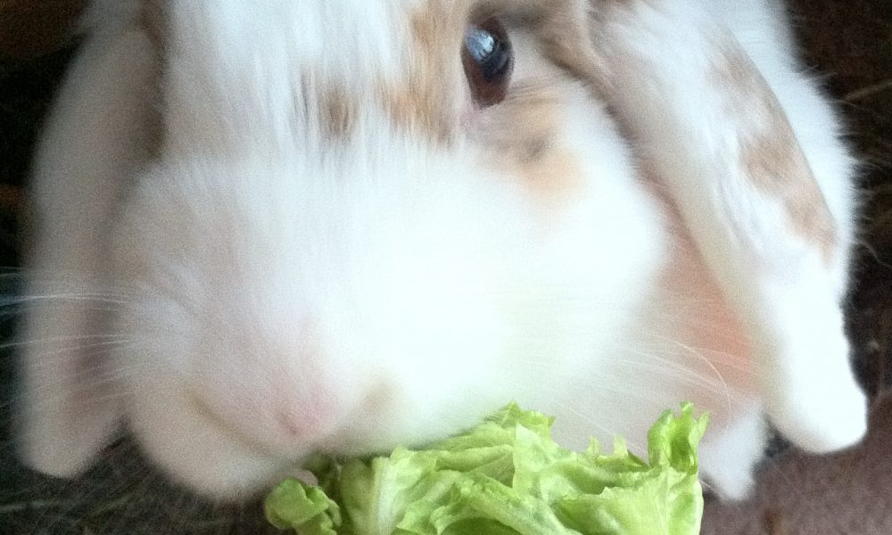

Thông tin về loài thỏ
Thỏ là động vật có vú nhỏ được xếp vào họ Leporidae thuộc bộ Lagomorpha, sinh sống ở nhiều nơi trên thế giới. Thỏ được phân loại thành bảy loại, điển hình như thỏ rừng châu Âu (Oryctolagus cuniculus), thỏ đuôi bông (giống Sylvilagus; 13 species), thỏ Amami (Pentalagus furnessi, 1 loài thỏ quý hiếm ở Amami Oshima, Nhật). Còn nhiều loài thỏ khác trên thế giới; thỏ đuôi bông, thỏ cộc và thỏ rừng được xếp vào bộ Lagomorpha. Tuổi thọ của thỏ từ 4 tới 10 năm, thời kỳ mang thai khoảng 31 ngày.

Thỏ nhà yếu hơn thỏ rừng và khi mới sinh ra thì không có lông và không mở mắt. Còn thỏ rừng khi sinh ra thì nói chung đã có thể mở mắt và mọc lông khá đầy đủ. Thỏ nhà sống trong các hang dưới đất (trừ thỏ đuôi bông) trong khi thỏ rừng lại làm tổ trên mặt đất và không sống thành đàn (bao gồm thỏ đuôi bông). Ngoài ra, thỏ rừng lớn hơn thỏ nhà, tai cũng dài hơn và bộ lông có đốm đen. Thỏ rừng không được thuần hóa trong khi thỏ nhà được xem như thú nuôi. Nếu được thả trong vườn, thỏ nhà sống trong những cái chuồng nhỏ bằng sắt để tránh những con thú khác.